This is exactly how I made Episode 1 of Shadows Don't Lie: casting, faces that stay the same, voices, scenes with real dialogue, music. All of it in Kolbo, every prompt ready to copy.
A micro drama is a whole series told in under a minute per episode. You don't need a crew. You need a sharp idea, characters the model can't forget, and scenes written like a director talks.
Midjourney, Nano Banana Pro, Seed Audio, Seedance 2.5 and Suno in one place. Start with my discount:
Codes work on your first purchase of a monthly plan. Sign up through my link, accept the cookies on Kolbo's site and enter the code at checkout.
The episodes that travel are about something everyone knows, like saying "I'm over you" when you're not, set in a world that looks like nothing else. The shadows here say what the couple won't.
Never write a scene before the characters are locked. A character sheet from three angles is what keeps the same face in every shot.
Second by second: who is where, what the camera does, what is said and how. Describe what should happen. The model fills every gap with a guess.
Split your episode into scenes of about 15 seconds. Each scene is one generation. Ours:
Put the series name on screen in the first two seconds and end on a dry last line. That last line is what makes people wait for Episode 2.
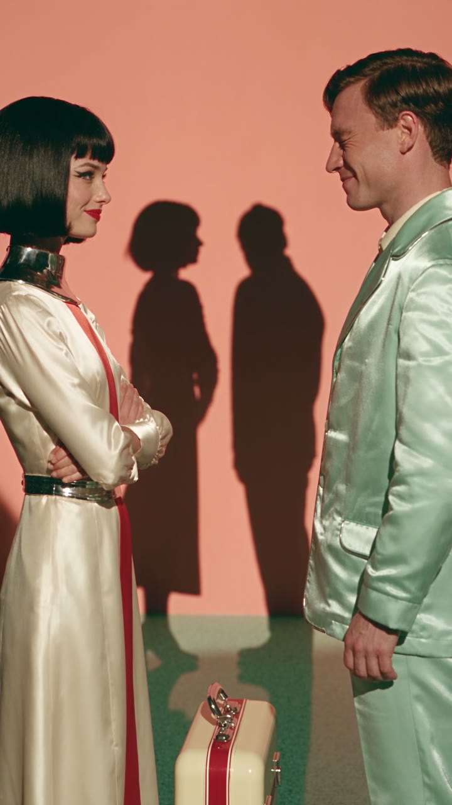
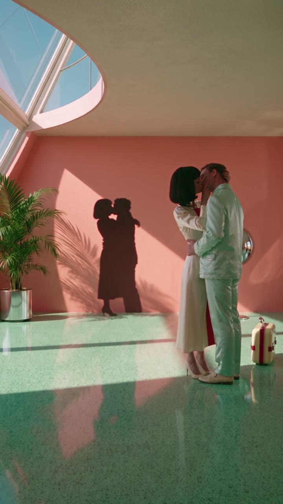
Midjourney gives the glossy, cinematic look. Generate each character and the empty room separately, with the same style words at the end of every prompt so they belong to one film.
medium close-up portrait of a glamorous woman of 27 with a sleek glossy jet-black chin-length bob and short fringe, bold winged eyeliner, glossy red lips, wearing a theatrical retro-futuristic cream satin dress with a cherry-red stripe, a sculpted chrome collar and chrome belt, arms folded, proud dry half smile, standing in a bright retro-futuristic living room with a huge window, chrome globe lamps and a potted palm, 1960s Technicolor Hollywood glamour film still, retro-futuristic world, bright high-key daylight, vivid clean saturated colours, cherry red, turquoise, coral, mint and chrome, luminous porcelain skin, sparkling eyes, glossy and crisp, Kodachrome postcard
empty retro-futuristic 1960s living room, no people, glossy mint terrazzo floor, curved peach velvet sofa, chrome globe lamps, turquoise ceramics, potted palms, a huge curved window onto a futuristic pastel city and blue sky, and one smooth plain coral-peach wall with bright hard sunlight across it, 1960s Technicolor Hollywood glamour film still, retro-futuristic world, bright high-key daylight, vivid clean saturated colours, cherry red, turquoise, coral, mint and chrome, luminous porcelain skin, sparkling eyes, glossy and crisp, Kodachrome postcard
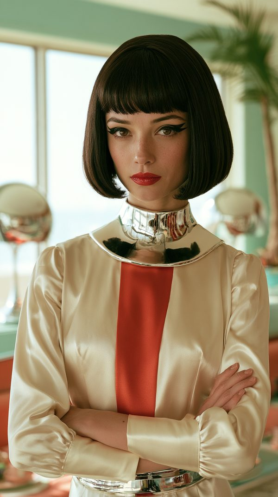
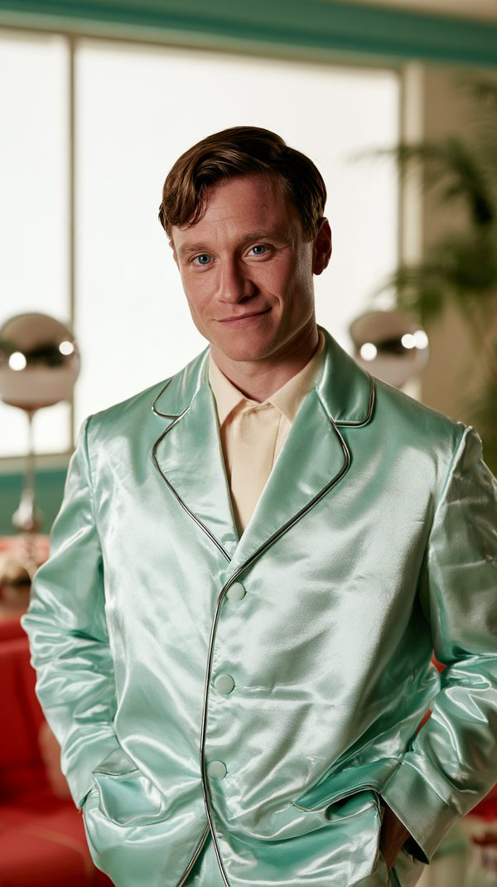
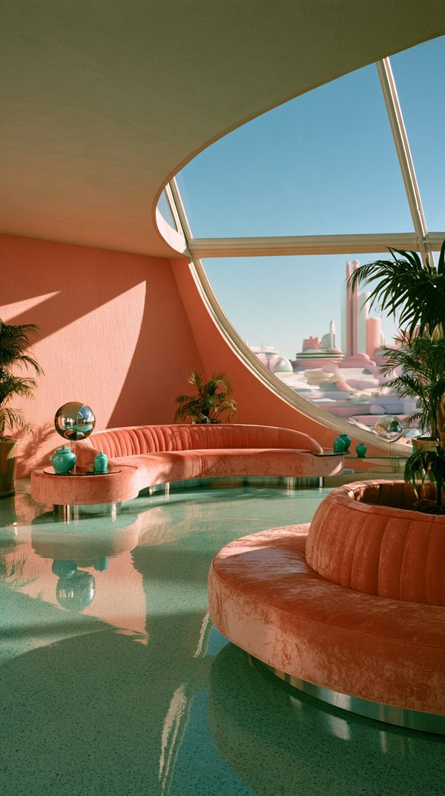
Midjourney is great for the look but won't hold a face. So take the image you chose and give it to Nano Banana Pro as the reference: it keeps the exact face and builds a sheet from three angles. These sheets are what the video model reads.
CHARACTER SHEET, 16:9, three panels side by side separated by thin white gutters on a plain warm light-grey studio background: LEFT a tight head-and-shoulders close-up, MIDDLE a full-body standing shot from the FRONT head to feet, RIGHT a full-body standing shot from the BACK head to feet; same person, same costume in all three. No text, no labels. Image 1 is this exact person: keep the face, eyes, nose, mouth, makeup, hair and costume IDENTICAL, the same human being. VIVIAN, 27: sleek glossy jet-black chin-length bob with a short fringe, bold winged eyeliner, glossy red lips; long-sleeved cream satin retro-futuristic dress with a broad cherry-red vertical stripe, a sculpted mirror-chrome collar and a chrome belt, cream pointed heels. Keep EXACTLY the look of the reference images: 1960s Technicolor Hollywood glamour, bright high-key light, vivid clean saturated colour, glossy satin and chrome, luminous porcelain skin, crisp and polished, like a Midjourney film still.
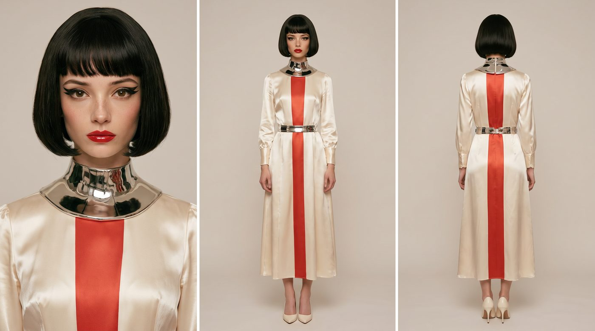
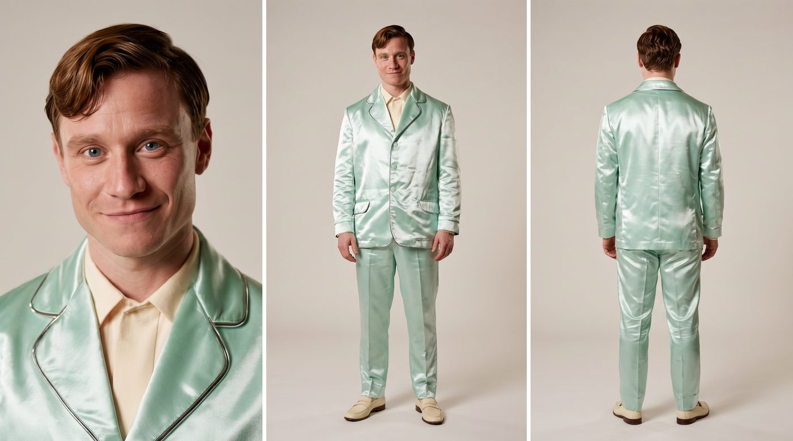
Seed Audio creates a voice from the character's image. Have them say a line that is not in your episode. You'll use this clip only as the voice identity, so the model never repeats it in the scene.
The woman in the reference image speaks. She is Vivian, 27, sophisticated and self-controlled, dry wit, a cool mid-Atlantic 1960s film-star diction, low and smooth, amused and a little superior, on the phone with her sister. Clean studio recording. No telephone filter. No music. No background noise. She says: "Darling, I told him twice. The curtains stay. The cactus goes. And no, I am not discussing the cactus again."
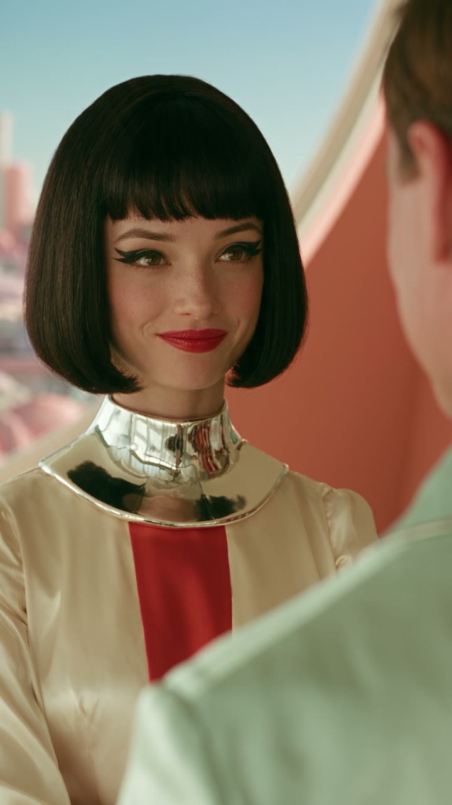
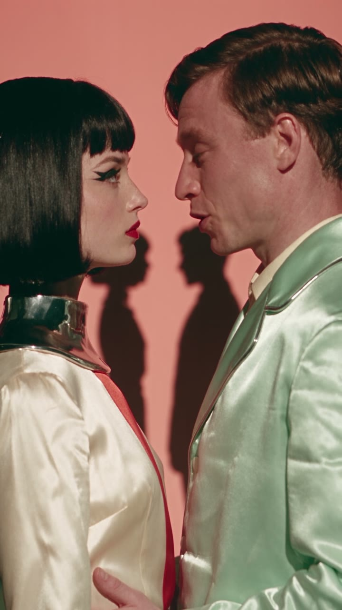
This is the heart of it. One Seedance 2.5 run, 15 seconds, Multishot on, six shots with cuts, and the dialogue written right inside the prompt. Give it the references in a fixed order and tell it what each one is for.
6 connected cinematic shots, 15 seconds total, vertical 9:16, Multishot ON. A glossy 1960s Technicolor romantic comedy. VIVIAN and JACK, a couple who just broke up, stand calmly in a retro-futuristic living room. Far behind them, on a coral-peach wall, their two SHADOWS perform like a silent shadow-puppet theatre and act out what the couple really feels. REFERENCES. @Image 1 is VIVIAN's face and @Image 2 her full look from front and back: a glamorous woman of 27, sleek glossy jet-black chin-length bob with a short fringe, bold winged eyeliner, glossy red lips; a long-sleeved cream satin retro-futuristic dress with a broad cherry-red vertical stripe, a sculpted mirror-chrome collar and a chrome belt, cream heels. @Image 3 is JACK's face and @Image 4 his full look: a boyish man of 32, wavy auburn-brown hair, clean-shaven, warm hazel eyes; a glossy pale-mint satin suit with fine chrome piping over a cream shirt, cream loafers. @Image 5 is the plain coral-peach shadow wall with the glossy mint floor in front of it, and @Image 6 is the whole retro-futuristic living room (curved coral velvet sofas, chrome globe lamps, palms, a huge curved window onto a pastel futuristic city). @Image 7 is the small cream suitcase with a red stripe and chrome handle. @Image 8 is the LOOK reference for the whole film: copy its bright Technicolor glamour light, colour, satin sheen and crisp image exactly. @Audio 1 is only Vivian's voice identity, @Audio 2 only Jack's; never speak the words heard in them. STAGING. Vivian and Jack stand facing each other in the FOREGROUND of the room, about one metre apart. The coral-peach wall is THREE METRES BEHIND them in the background. A hard bright sun from camera-left throws their shadows onto that far wall, where the shadows are large, flat, crisp and dark, clearly separate from the people, with empty wall around them. Vivian's arms are folded across her chest for the whole film. Her suitcase stands on the floor right at her feet, touching her right shoe, in every shot. Jack's hands rest in his jacket pockets for the whole film. The people are calm and composed; the shadows on the far wall are the expressive ones. MOTION: the people move subtly and naturally in real time: breathing, blinking, swallowing, small glances, tiny smiles. The shadows on the far wall move with clear, simple, readable gestures. Everything else is still. CAMERA: eye level, steady tripod or slow dolly push-in, 50mm for two-shots, 85mm for close-ups. LIGHT: bright clear daylight, high-key and airy, soft frontal beauty light on the faces; a hard white sun from camera-left paints the far wall with the crisp shadows. No golden haze, no yellow cast. Light, colour and exposure stay consistent across all shots. STYLE: 1960s Hollywood Technicolor glamour exactly like @Image 8, a bright high-key Kodachrome postcard: vivid clean saturated colour (cherry red, turquoise, coral, mint), deep clean blacks, luminous smooth skin, sparkling eyes, crisp sharp image. [no subtitles] [no text overlays] [no captions] [clean frame] [0:00-0:02] SHOT 1. Two-shot from the waist up, eye level, 50mm, locked-off: Vivian on the left, Jack on the right, in profile facing each other in the foreground, both smiling politely; behind and between them, the far coral wall with their two shadows. On the far wall, Vivian's shadow swings its arm in a big theatrical slap at the shadow of Jack's head; Jack's shadow head tips slightly and settles. In the foreground both people keep their polite smiles; Vivian's arms stay folded; Jack only blinks. A dry crisp slap sound, then a light bossa nova guitar begins. [0:02-0:04.5] SHOT 2. Over Jack's shoulder onto Vivian, 85mm, slow push-in. Her arms folded, a cool controlled smile, she swallows once, her jaw tightens. VIVIAN, dry, smooth mid-Atlantic diction: "Well. This was mature." The fake smile never reaches her eyes. [0:04.5-0:07] SHOT 3. Back to the Shot 1 two-shot, same framing and light. JACK, warm, trying to sound casual: "Very mature." Right after his line, on the far wall, Vivian's shadow swings a second theatrical slap at the shadow of Jack's head; his shadow head tips slightly and settles. In the foreground the people stay calm; Jack blinks once. A second dry slap sound. [0:07-0:09.5] SHOT 4. Medium close-up of Jack over Vivian's shoulder, 85mm. His eyes drop to the floor and come back up to her, a nervous half laugh. JACK, softly, hopeful: "No hard feelings?" His eyebrows lift a little, waiting. [0:09.5-0:12] SHOT 5. Back to the Shot 1 two-shot, same framing and light. On the far wall, Jack's shadow sinks onto both knees in front of Vivian's shadow and presses its palms together, begging. In the foreground Vivian's eyes slide to the wall and back to Jack, unimpressed. VIVIAN, flat and dry: "Tell him to get up." [0:12-0:15] SHOT 6. Close-up of Jack, 85mm, the far wall softly behind him with his kneeling shadow. He turns his face a little away from Vivian and presses his lips together. JACK, quietly, offended: "We're not speaking." He glances back at her to see if it landed. The bossa nova keeps playing. AVOID (things that broke before): a real arm reaching toward a face, any contact between the two people, Jack's real head moving when his shadow is hit, shadows fading or vanishing, a shadow thrown far backwards, people looking into the lens. Also avoid: the suitcase standing anywhere except at Vivian's feet.
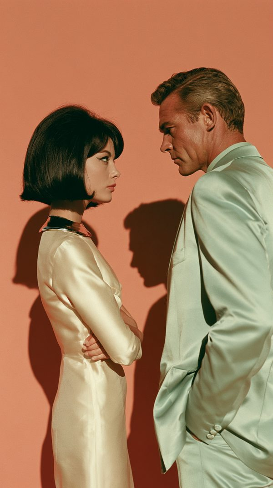
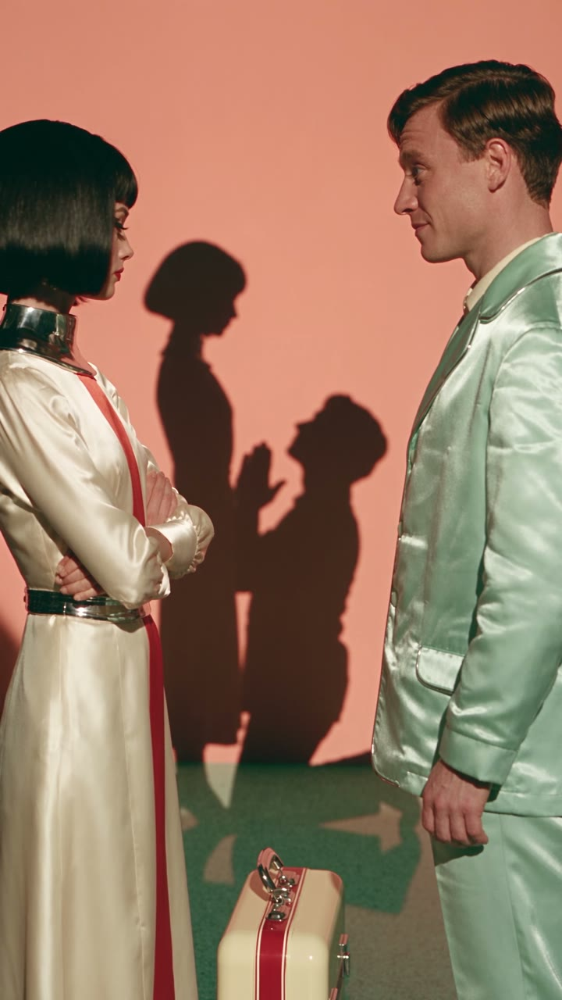
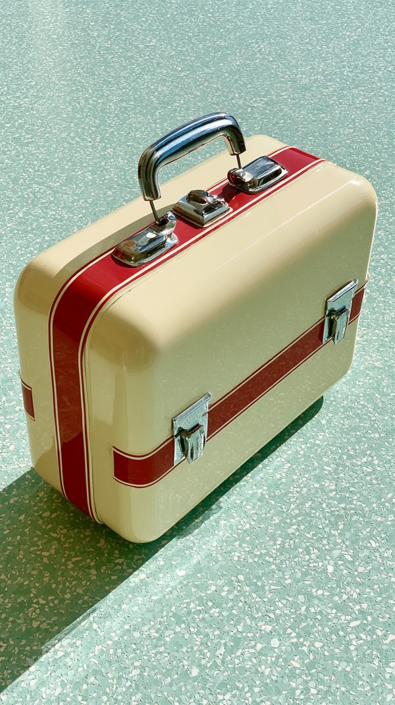
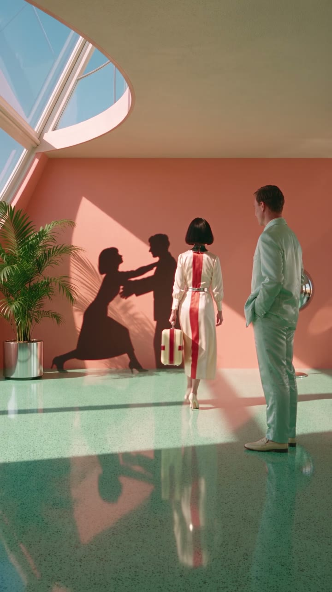
Run every scene as a 480p draft. It's fast and cheap, so you can try two takes and keep the better one. Only when the whole episode works, send the approved drafts to Full Quality in Kolbo. It renders the same take again in native 1080p.
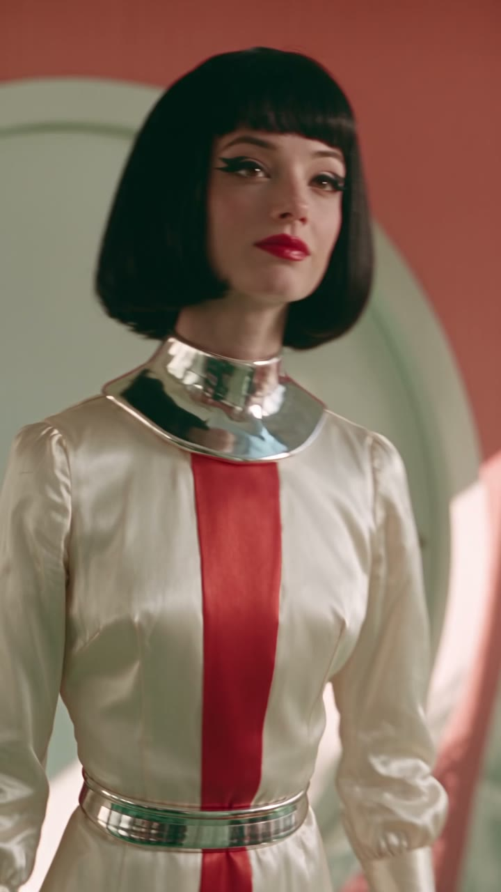
Write the music prompt to your episode's timeline: quiet under dialogue, bigger where nobody talks, silent where silence is the joke. Then cut it in so it stops and starts on the exact frames.
Slow sultry 1960s film-noir romance score, mysterious and seductive, 68 BPM, D minor. Instruments ONLY: solo Harmon-muted trumpet, upright bass, brushed snare and ride cymbal, soft vibraphone. [0:00-0:20] upright bass alone with slow brushes, smoky and secretive, the trumpet silent. [0:20-0:25] the muted trumpet sings one long sultry phrase, like a secret confession. [0:25-0:33] back to bass and brushes, slow and tense. [0:33-0:40] only a soft ride cymbal shimmer. [0:40-0:45] the trumpet returns warm and full with the vibraphone, a romantic sigh. [0:45-0:49] one hanging vibraphone chord. [0:49-0:50] a single soft low bass note to close. Late-night club sound, dry and intimate. Instrumental only. No vocals, no choir.
Last touches: the title and "Season 1 · Episode 1" in the first seconds, and big bold subtitles for social.
Broke: writing "don't touch his face". The model read "touch" and did it.
Fixed: describing what does happen: her arms stay folded, his hands stay in his pockets.
Broke: tight framing with the wall right behind them. The model couldn't tell the shadow from the person.
Fixed: the wall three metres back, shadows in the empty space between them.
Broke: adding a long continuity paragraph to a prompt that already worked.
Fixed: keep the take that works as the base and change one thing at a time.
Every tool on this page lives in Kolbo. Sign up through my link and take the discount for your first month.
Start on KolboMade something? Tag @leviorel and @kolbo.ai, I want to see it.
New AI workflows every week. Pick your platform: